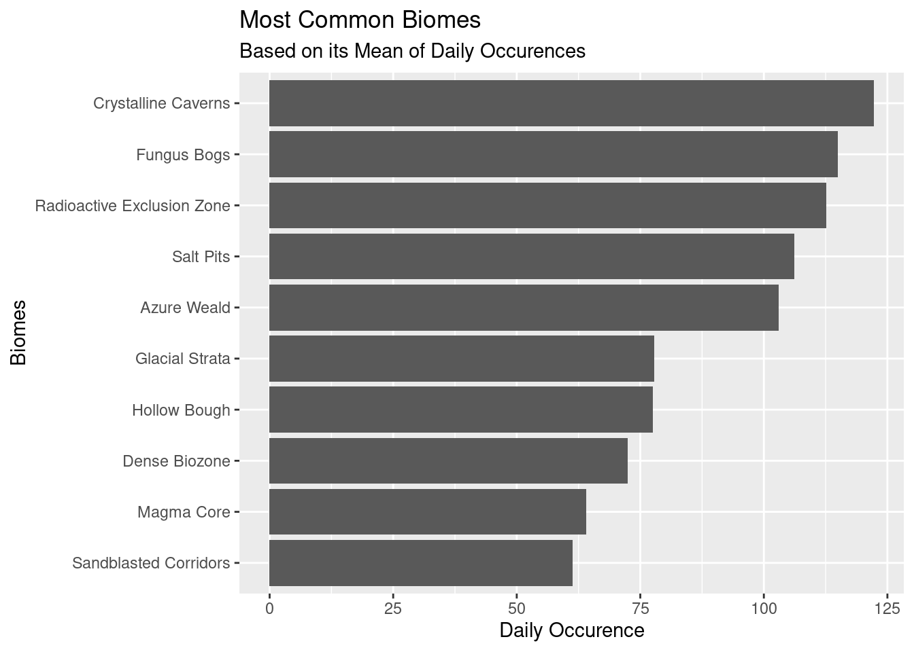
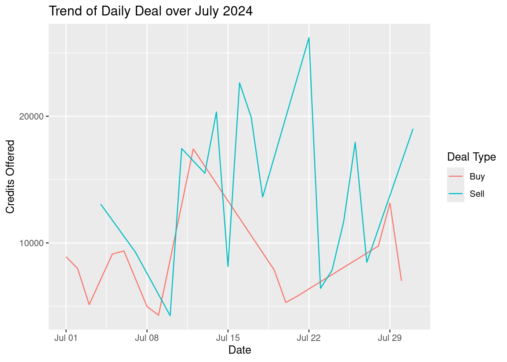

Analyzing Deep Rock Galactic Daily Missions Data Over July 2024
Author
invictus
Published
July 31, 2024
Modified
August 5, 2024
Introduction
Rocks and stones may break my bones, but beer will never hurt me. gee, I’m feeling poetic today!
Anyone who plays Deep Rock Galactic (DRG) must’ve heard of that phrase once. It’s my personal favorite.
If you’re not familiar with the game, DRG is an FPS Sandbox Generated type of game, where you’ll play as a miner that lives on space. You’ll be diving 1000km to the underground to accomplish a given mission. These missions are randomly generated (or is it?) every 30 minutes.
Interestingly, these missions are the same for all players around the world, as long as you play on the same season.
For every mission, there’s a small chance that it’ll come with a mutator that changes that nature of the gameplay. One that most sought after is the ‘Double XP’ mutator, as you can guess, will double the amount of XP you’ll obtain.
XP is very important during the early games, because your level will determine what weapons you can unlock and what upgrades you can purchase.
Therefore, one of the reasons that inspired me to conduct this study is to discover the pattern of ‘Double XP’ mutator. I want to know whether it’s completely random or whether I can find out at which hours it usually appear.
I’m a beginner myself in the game, only have about 40 hours gameplay. So, the result of this study will benefit me very much.
Acknowledgement
This work could’ve not been done without the massive effort by rolfosian, who has written a script to extract the missions data stored on the game. Additionally, he has a site that displays the current active missions updated in real-time, https://doublexp.net/. Feel free to check the source code his github repo.
Objective
I haven’t run it myself on my PC. Fortunately, I discovered that he stores many of the collected missions in json format on the site. Not long after, I wrote simple python scripts to download, parse, and convert them to csv.
It was a lot of fun. Now, I want to rewrite the script in R and then finally analyze the data. The objective is to get a full daily missions data over July 2024. And then hopefully to find pattern on ‘Double XP’. Additionally, I’ll peek on other insights as well, because, why not?
Collecting Data
Let’s fire up our swiss-army knife, tidyverse.
library(tidyverse)
── Attaching core tidyverse packages ──────────────────────── tidyverse 2.0.0 ──
✔ dplyr 1.1.4 ✔ readr 2.1.5
✔ forcats 1.0.0 ✔ stringr 1.5.1
✔ ggplot2 3.5.1 ✔ tibble 3.2.1
✔ lubridate 1.9.3 ✔ tidyr 1.3.1
✔ purrr 1.0.2
── Conflicts ────────────────────────────────────────── tidyverse_conflicts() ──
✖ dplyr::filter() masks stats::filter()
✖ dplyr::lag() masks stats::lag()
ℹ Use the conflicted package (<http://conflicted.r-lib.org/>) to force all conflicts to become errors
From the rolfosian’s project source code, I discovered that the json files are stored on https://doublexp.net/static/json/bulkmissions/{yyyy-mm-dd}.json. So let’s set that up as the base_url
The base URL will be used to generate all the download links for each json file. Since the file names are formatted by ISO dates, it’s easy to generate using lubridate
library(lubridate)start_date <-ymd('2024-07-01')end_date <-ymd('2024-07-31')date_list <-seq(start_date, end_date, by ='day')
As simple as that. Now we have a list of date from July 1 to July 31
We can also use paste0() to combine them with the base URL to get the download links
json_urls <-paste0(json_base_url, filename_list)
Now we can use this list to download all the json files from doublexp.net. Let’s put a time recorder on it too, because why not 😆.
dir.create('json')
Warning in dir.create("json"): 'json' already exists
library(tictoc)
tic('Download all missions json for July 2024')mapply(download.file, json_urls, paste0('json/', filename_list))toc()
trying URL 'https://doublexp.net/static/json/bulkmissions/2024-07-01.json'
Content type 'application/json' length 261344 bytes (255 KB)
==================================================
downloaded 255 KB
...
https://doublexp.net/static/json/bulkmissions/2024-07-01.json https://doublexp.net/static/json/bulkmissions/2024-07-01.json
...
Download all missions json for July 2024: 64.759 sec elapsed
64 seconds. Not bad. Now let’s parse it into a data frame. But first, we need to understand the structure of the JSON.
Processing Data
Parsing one JSON
Due to its unstructured nature, JSON can be messy and hard to parse. Fortunately, the JSON we have here is not too complex. The good thing is, all the JSON are structured the same way. So, we only need to figure out a way to parse one JSON, to parse all of them.
Let’s take a look at the JSON file.
library(jsonlite)
Attaching package: 'jsonlite'
The following object is masked from 'package:purrr':
flatten
json_data <-read_json('./json/2024-07-01.json')
json_data |>length()
[1] 50
json_data[c(1:3)] |>glimpse()
List of 3
$ 2024-07-01T00:00:00Z:List of 2
..$ timestamp: chr "2024-07-01T00:00:00Z"
..$ Biomes :List of 6
.. ..$ Glacial Strata :List of 3
.. ..$ Crystalline Caverns :List of 4
.. ..$ Sandblasted Corridors :List of 5
.. ..$ Radioactive Exclusion Zone:List of 4
.. ..$ Dense Biozone :List of 5
.. ..$ Hollow Bough :List of 3
$ 2024-07-01T00:30:00Z:List of 2
..$ timestamp: chr "2024-07-01T00:30:00Z"
..$ Biomes :List of 5
.. ..$ Crystalline Caverns :List of 4
.. ..$ Azure Weald :List of 4
.. ..$ Fungus Bogs :List of 7
.. ..$ Radioactive Exclusion Zone:List of 4
.. ..$ Dense Biozone :List of 4
$ 2024-07-01T01:00:00Z:List of 2
..$ timestamp: chr "2024-07-01T01:00:00Z"
..$ Biomes :List of 5
.. ..$ Glacial Strata :List of 5
.. ..$ Crystalline Caverns :List of 3
.. ..$ Salt Pits :List of 9
.. ..$ Azure Weald :List of 4
.. ..$ Radioactive Exclusion Zone:List of 4
So, the JSON has 4 levels:
Timestamps
Biomes
The biomes themselves
Mission for each biome (note that the fields under Biomes are also lists)
I’ve explored the JSON with View(), so I got a pretty rough idea of the general structure. I found there are 2 fields with different structure at the end of the lists.
json_data[c(49:50)] |>glimpse()
List of 2
$ dailyDeal:List of 6
..$ ResourceAmount: int 138
..$ ChangePercent : num 57
..$ DealType : chr "Buy"
..$ Credits : int 8908
..$ Resource : chr "Enor Pearl"
..$ timestamp : chr "2024-07-01T00:00:00Z"
$ ver : int 4
The ver field is probably just an internal variable for doublexp.net. So it’s safe to remove it. dailyDeal however, is a useful data we can use to analyze the daily deal of the game. But we need to process it differently so it doesn’t interfere with the missions parsing.
Let’s store in a separate variable, dailyDeal
dailyDeal <- json_data$dailyDeal
Now, we can remove them from the json_data. I’m not comfortable mutating our JSON directly, so let’s assign it to a new variable.
We’re good to go. It’s time to unravel this JSON to a beautiful data frame.
drg_missions <-tibble(drg_missions)
Unfortunately, this comes the hard part, unnesting the JSON. tidyr provides a powerful set of tools to unnest a data. Yet, I barely able to wrap my head around it.
Basically, there’s two main functions we’ll use:
unnest_wider(): To unpack a list into columns
unnest_longer(): To unpack a list into rows
First, we’ll do unnest_wider() to make the timestamps as a new column.
drg_missions |>unnest_wider(drg_missions)
# A tibble: 48 × 2
timestamp Biomes
<chr> <list>
1 2024-07-01T00:00:00Z <named list [6]>
2 2024-07-01T00:30:00Z <named list [5]>
3 2024-07-01T01:00:00Z <named list [5]>
4 2024-07-01T01:30:00Z <named list [5]>
5 2024-07-01T02:00:00Z <named list [6]>
6 2024-07-01T02:30:00Z <named list [5]>
7 2024-07-01T03:00:00Z <named list [5]>
8 2024-07-01T03:30:00Z <named list [5]>
9 2024-07-01T04:00:00Z <named list [6]>
10 2024-07-01T04:30:00Z <named list [5]>
# ℹ 38 more rows
Then, we’ll unnest_longer() twice to unwrap the Biomes, and the biomes themselves (level 2 and 3).
At this point, the data frame is almost done. It looks exactly like how we want it to be. Except, 2 columns are still lists: MissionWarnings and Included_in. We could do unnest_longer() on them, but it’ll make duplicate rows, since the only thing different is them. So, the alternative is to use paste to join them as one string, separated by comma.
Perfect! Later on, we’ll use the included_in to filter the missions available to us based on the season.
The lasts thing to convert is the MissionWarnings. We could combine them with paste() as well, but it’s a valuable data we can use to analyse the mission. It’s better to treat them as variables and separate it into two columns with unnest_wider().
You probably noticed why I reassign dailyDeal multiple times instead of just chaining the pipe operator. Please don’t ask why 😅. I spent more than 30 minutes debugging why the pipe operator messes up the code. In a nutshell, reassigning it preserves the ‘dailyDeal’ name inside the column, while pipe operator do the opposite.
Previously, it was supposed to be one function, returning a list of 2 tibbles. But that caused a lot of unexpected headache related to one I just mentioned. So I decided to just make separate functions to parse dailyDeal and missions.
Wow, that’s quite a significant processing time. Let’s cache them to csv files so I don’t need to convert them again from scratch if I need to debug.
But first, we need to combine them into one data frames
Rows: 31 Columns: 6
── Column specification ────────────────────────────────────────────────────────
Delimiter: ","
chr (2): DealType, Resource
dbl (3): ResourceAmount, ChangePercent, Credits
dttm (1): timestamp
ℹ Use `spec()` to retrieve the full column specification for this data.
ℹ Specify the column types or set `show_col_types = FALSE` to quiet this message.
Previously, I mentioned that we’d only analyze missions data that is usually availabe to most people. Which is the unseasoned ones. In this data, it’s the s0 from included_in. So we can filter only the rows with s0.
Since we manually extracted and parsed the data from the JSON files, R didn’t assume any data type and just render everything as chr. Which mean, a lot of them needs to be changed.
Factors Biomes, PrimaryObjective, SecondaryObjective, MissionMutator, MissionWarning1, and MissionWarning2 should be factors, since they’re categorical variables with limited set of values. Complexity and Length are a bit tricky since they’re ordinal variables, which can be treated as either qualitative or quantitative. Claude Sonnet 3.5, however, argues that since we don’t know the exact interval between 1 to 2, or 2 to 3, they should be treated as categorical. Sonnet 3.5 has helped me a lot, so I’ll trust her 🤣.
Based on the information provided, your ‘Complexity Level’ variable is an ordinal categorical variable. Even though it’s represented by numbers (1, 2, 3), it’s not truly numeric in nature, as the intervals between levels may not be equal.
Characters CodeName can stay as chr since they don’t really hold any values other than being randomly generated names. included_in should probably be factors, but the structure isn’t standardized yet, and we don’t need to deal with them anyway.
Integers id should be integers. Oh wait, it’s already is! I didn’t know that.
Date This one is obvious. The Timestamp column should be in date object format. Otherwise, we can’t do any date computation with it.
Now it looks much better. We can reorder the bar descendingly with fct_infreq() to see what’s the highest and lowest, but honestly, they all don’t seem much differ in values, except for Blood Sugar.
# A tibble: 7 × 2
WeekDay mean
<ord> <dbl>
1 Sun 21.2
2 Mon 18.6
3 Tue 20.2
4 Wed 19
5 Thu 17
6 Fri 20.2
7 Sat 22.5
It looks like there isn’t much difference between the day. We can verify it by checking the SD.
double_xp_trend_weekly |>pull(mean) |>sd()
[1] 1.810584
Yeah, that’s minuscule. But still, let’s visualize it to get a better picture.
double_xp_trend_weekly |>ggplot(aes(WeekDay, mean, group =1)) +geom_line() +geom_label(aes(label = mean)) +labs(x='Week Day', y='Averge Occurence (mean)', title ='Average Occurence (Mean) of Double XP Each Day')
So the peak is on Saturday and the trough is on Thursday. Still, if you think about it as a gamer, it really isnt’ much of a difference, except maybe for Thursday. 20 Double XP a day is a lot. One game can range from 30 to 60 minutes. Even if you stay up all day, you can’t get all of them anyway.
When we zoom out and see the pattern throughout the month, we can see a repeating up and down cycle that’s going down nearing the end of the month. I wish we have data from the other months to complete the pattern.
If we zoom in on the hours and sum all the occurrences on each hour, we can see that the peak is on 10:00 UTC. But is it really that much of a difference compared to the rest? As we did previously, we can use the mean instead to see how many occurence is it on average.
Ohhh, that’s unexpected. So on average, the highest is not on 10:00 UTC, but on 01:00 UTC, which was quite low when we see the the total count. This might indicate a presence of outliers.
Anyway, it doesn’t matter. The range is only about 1 difference, from 1 to 2. That’s meaningless when you consider the game duration per mission. Once you finish one, a new mission will be generated.
Summary
Insight 1: Double XP Pattern
Statistically, there are trends and pattern of peaks and troughs, of when Double XP most likely to happen.
Unfortunately, from the gamer’s perspective, the difference is not significant enough. On Weekly difference, you don’t play game all day. On hourly difference, a new mission will be generated once you played.
In short, there is no strategy that we, as the gamers, can use to find the right time to play. Fortunately, since we have the complete timestamps, we can use it to instead snipe the Double XP missions directly.
Insight 2: Mutators Occurrences
There’s another interesting insight, though. The hourly average is about 1.5. However, we know that the game mission refreshes every 30 minutes. And there’s like 20 missions at once. Which mean, on average, there can only be 1 Double XP mission in every cycle.
But remember, we have filtered the data to only include missions that are Double XP. If we have included all mutators, it’s highly possible they have similar pattern, considering the frequency of all mutators are highly similar.
Appendix: Other Findings
Below, you can find other findings that aren’t related to Double XP, but might be interesting to know.
missions_df_other_findings |>count(Day, Biome, name ='Total_Occurences') |>group_by(Biome) |>summarize(Daily_Occurence =mean(Total_Occurences)) |>arrange(desc(Daily_Occurence)) |>ggplot(aes(Daily_Occurence, fct_rev(fct_infreq(Biome, Daily_Occurence)))) +geom_col() +labs(title ='Most Common Biomes', subtitle ='Based on its Mean of Daily Occurences', x ='Daily Occurence', y ='Biomes')

Primary Objective
Code
missions_df_other_findings |>count(Day, PrimaryObjective, name ='Total_Occurences') |>group_by(PrimaryObjective) |>summarize(Daily_Occurence =mean(Total_Occurences)) |>ggplot(aes(fct_infreq(PrimaryObjective, Daily_Occurence), Daily_Occurence)) +geom_col() +scale_x_discrete(labels =function(x) str_wrap(x, width =5)) +labs(title ='Most Common Primary Objectives', subtitle ='Based on its Mean of Daily Occurences', x ='Primary Objective', y ='Daily Occurence')
Secondary Objective
Code
missions_df_other_findings |>mutate(SecondaryObjective =str_replace(SecondaryObjective, 'ApocaBlooms', 'Apoca Bloom')) |>count(Day, SecondaryObjective, name ='Total_Occurences') |>group_by(SecondaryObjective) |>summarize(Daily_Occurence =mean(Total_Occurences)) |>ggplot(aes(fct_rev(fct_infreq(SecondaryObjective, Daily_Occurence)), Daily_Occurence)) +geom_col() +scale_x_discrete(labels =function(x) str_wrap(x, width =5)) +labs(title ='Most Common Secondary Objectives', subtitle ='Based on its Mean of Daily Occurences', x ='Secondary Objective', y ='Daily Occurence')
Mission Warnings
Primary Warning
Code
missions_df_other_findings |>filter(!is.na(MissionWarning1)) |>count(Day, MissionWarning1, name ='Total_Occurences') |>group_by(MissionWarning1) |>summarize(Daily_Occurence =mean(Total_Occurences)) |>arrange(desc(Daily_Occurence)) |>head(5) |>ggplot(aes(Daily_Occurence, fct_rev(fct_infreq(MissionWarning1, Daily_Occurence)))) +geom_col() +labs(title ='Top Five Most Common Frimary Mission Warnings', subtitle ='Based on its Mean of Daily Occurences', x ='Daily Occurence', y ='Primary Mission Warnings')
Code
missions_df_other_findings |>filter(!is.na(MissionWarning1)) |>count(Day, MissionWarning1, name ='Total_Occurences') |>group_by(MissionWarning1) |>summarize(Daily_Occurence =mean(Total_Occurences)) |>arrange(Daily_Occurence) |>head(5) |>ggplot(aes(Daily_Occurence, fct_infreq(MissionWarning1, Daily_Occurence))) +geom_col() +labs(title ='Top Five Rarest Primary Mission Warnings', subtitle ='Based on its Mean of Daily Occurences', x ='Daily Occurence', y ='Primary Mission Warnings')
Mission Warnings Combinations
Top 10
Code
missions_df_other_findings |>filter(!is.na(MissionWarning1), !is.na(MissionWarning2)) |>count(MissionWarning1, MissionWarning2, name ='Total_Occurence') |>arrange(desc(Total_Occurence))
dailyDeal_df_combined |>ggplot(aes(timestamp,Credits, colour = DealType)) +geom_line() +labs(title ='Trend of Daily Deal over July 2024', color='Deal Type', x='Date', y='Credits Offered')

Common Resource on Sale
Code
dailyDeal_df_combined |>count(Resource) |>ggplot(aes(fct_infreq(Resource, n), n)) +geom_col() +labs(title ='Most Common Resource on Sale', subtitle ='Based on total occurences over July 2024', x ='Resource', y ='Total Occurence')